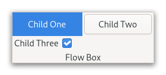

Gtk.FlowBox¶
Example¶
- Subclasses
None
Methods¶
- Inherited
Gtk.Widget (181), GObject.Object (37), Gtk.Accessible (15), Gtk.Buildable (1), Gtk.Orientable (2)
- Structs
class |
|
|
|
|
|
|
|
|
|
|
|
|
|
|
|
|
|
|
|
|
|
|
|
|
|
|
|
|
|
|
|
|
|
|
|
|
|
|
|
|
|
|
|
|
|
|
|
|
Virtual Methods¶
Properties¶
- Inherited
Name |
Type |
Flags |
Short Description |
|---|---|---|---|
r/w/en |
|||
r/w/en |
|||
r/w/en |
|||
r/w/en |
|||
r/w/en |
|||
r/w/en |
|||
r/w/en |
|||
r/w/en |
Signals¶
- Inherited
Name |
Short Description |
|---|---|
Emitted when the user activates the box. |
|
Emitted when a child has been activated by the user. |
|
Emitted when the user initiates a cursor movement. |
|
Emitted to select all children of the box, if the selection mode permits it. |
|
Emitted when the set of selected children changes. |
|
Emitted to toggle the selection of the child that has the focus. |
|
Emitted to unselect all children of the box, if the selection mode permits it. |
Fields¶
- Inherited
Class Details¶
- class Gtk.FlowBox(**kwargs)¶
- Bases
- Abstract
No
A
GtkFlowBoxputs child widgets in reflowing grid.For instance, with the horizontal orientation, the widgets will be arranged from left to right, starting a new row under the previous row when necessary. Reducing the width in this case will require more rows, so a larger height will be requested.
Likewise, with the vertical orientation, the widgets will be arranged from top to bottom, starting a new column to the right when necessary. Reducing the height will require more columns, so a larger width will be requested.
The size request of a
GtkFlowBoxalone may not be what you expect; if you need to be able to shrink it along both axes and dynamically reflow its children, you may have to wrap it in aGtkScrolledWindowto enable that.The children of a
GtkFlowBoxcan be dynamically sorted and filtered.Although a
GtkFlowBoxmust have onlyGtkFlowBoxChildchildren, you can add any kind of widget to it via [method`Gtk`.FlowBox.insert], and aGtkFlowBoxChildwidget will automatically be inserted between the box and the widget.Also see [class`Gtk`.ListBox].
- CSS nodes
`` flowbox ├── flowboxchild │ ╰── <child> ├── flowboxchild │ ╰── <child> ┊ ╰── [rubberband] ``
GtkFlowBoxuses a single CSS node with name flowbox.GtkFlowBoxChilduses a single CSS node with name flowboxchild. For rubberband selection, a subnode with name rubberband is used.- Accessibility
GtkFlowBoxuses theGtk.AccessibleRole.GRIDrole, andGtkFlowBoxChilduses theGtk.AccessibleRole.GRID_CELLrole.- append(child)[source]¶
- Parameters
child (
Gtk.Widget) – theGtkWidgetto add
Adds child to the end of self.
If a sort function is set, the widget will actually be inserted at the calculated position.
See also: [method`Gtk`.FlowBox.insert].
New in version 4.6.
- bind_model(model, create_widget_func, *user_data)[source]¶
- Parameters
model (
Gio.ListModelorNone) – theGListModelto be bound to selfcreate_widget_func (
Gtk.FlowBoxCreateWidgetFunc) – a function that creates widgets for itemsuser_data (
objectorNone) – user data passed to create_widget_func
Binds model to self.
If self was already bound to a model, that previous binding is destroyed.
The contents of self are cleared and then filled with widgets that represent items from model. self is updated whenever model changes. If model is
None, self is left empty.It is undefined to add or remove widgets directly (for example, with [method`Gtk`.FlowBox.insert]) while self is bound to a model.
Note that using a model is incompatible with the filtering and sorting functionality in
GtkFlowBox. When using a model, filtering and sorting should be implemented by the model.
- get_child_at_index(idx)[source]¶
- Parameters
idx (
int) – the position of the child- Returns
the child widget, which will always be a
GtkFlowBoxChildorNonein case no child widget with the given index exists.- Return type
Gets the nth child in the self.
- get_child_at_pos(x, y)[source]¶
- Parameters
- Returns
the child widget, which will always be a
GtkFlowBoxChildorNonein case no child widget exists for the given x and y coordinates.- Return type
Gets the child in the (x, y) position.
Both x and y are assumed to be relative to the origin of self.
- get_column_spacing()[source]¶
- Returns
the horizontal spacing
- Return type
Gets the horizontal spacing.
- get_max_children_per_line()[source]¶
- Returns
the maximum number of children per line
- Return type
Gets the maximum number of children per line.
- get_min_children_per_line()[source]¶
- Returns
the minimum number of children per line
- Return type
Gets the minimum number of children per line.
- get_selected_children()[source]¶
- Returns
A
GListcontaining theGtkWidgetfor each selected child. Free with g_list_free() when done.- Return type
Creates a list of all selected children.
- get_selection_mode()[source]¶
- Returns
the
GtkSelectionMode- Return type
Gets the selection mode of self.
- insert(widget, position)[source]¶
- Parameters
widget (
Gtk.Widget) – theGtkWidgetto addposition (
int) – the position to insert child in
Inserts the widget into self at position.
If a sort function is set, the widget will actually be inserted at the calculated position.
If position is -1, or larger than the total number of children in the self, then the widget will be appended to the end.
- invalidate_filter()[source]¶
Updates the filtering for all children.
Call this function when the result of the filter function on the self is changed due to an external factor. For instance, this would be used if the filter function just looked for a specific search term, and the entry with the string has changed.
- invalidate_sort()[source]¶
Updates the sorting for all children.
Call this when the result of the sort function on self is changed due to an external factor.
- prepend(child)[source]¶
- Parameters
child (
Gtk.Widget) – theGtkWidgetto add
Adds child to the start of self.
If a sort function is set, the widget will actually be inserted at the calculated position.
See also: [method`Gtk`.FlowBox.insert].
New in version 4.6.
- remove(widget)[source]¶
- Parameters
widget (
Gtk.Widget) – the child widget to remove
Removes a child from self.
- remove_all()[source]¶
Removes all children from self.
This function does nothing if self is backed by a model.
New in version 4.12.
- select_child(child)[source]¶
- Parameters
child (
Gtk.FlowBoxChild) – a child of self
Selects a single child of self, if the selection mode allows it.
- selected_foreach(func, *data)[source]¶
- Parameters
func (
Gtk.FlowBoxForeachFunc) – the function to call for each selected child
Calls a function for each selected child.
Note that the selection cannot be modified from within this function.
- set_activate_on_single_click(single)[source]¶
-
If single is
True, children will be activated when you click on them, otherwise you need to double-click.
- set_column_spacing(spacing)[source]¶
- Parameters
spacing (
int) – the spacing to use
Sets the horizontal space to add between children.
- set_filter_func(filter_func, *user_data)[source]¶
- Parameters
filter_func (
Gtk.FlowBoxFilterFuncorNone) – callback that lets you filter which children to showuser_data (
objectorNone) – user data passed to filter_func
By setting a filter function on the self one can decide dynamically which of the children to show.
For instance, to implement a search function that only shows the children matching the search terms.
The filter_func will be called for each child after the call, and it will continue to be called each time a child changes (via [method`Gtk`.FlowBoxChild.changed]) or when [method`Gtk`.FlowBox.invalidate_filter] is called.
Note that using a filter function is incompatible with using a model (see [method`Gtk`.FlowBox.bind_model]).
- set_hadjustment(adjustment)[source]¶
- Parameters
adjustment (
Gtk.Adjustment) – an adjustment which should be adjusted when the focus is moved among the descendents of container
Hooks up an adjustment to focus handling in self.
The adjustment is also used for autoscrolling during rubberband selection. See [method`Gtk`.ScrolledWindow.get_hadjustment] for a typical way of obtaining the adjustment, and [method`Gtk`.FlowBox.set_vadjustment] for setting the vertical adjustment.
The adjustments have to be in pixel units and in the same coordinate system as the allocation for immediate children of the box.
- set_homogeneous(homogeneous)[source]¶
-
Sets whether or not all children of self are given equal space in the box.
- set_max_children_per_line(n_children)[source]¶
- Parameters
n_children (
int) – the maximum number of children per line
Sets the maximum number of children to request and allocate space for in self’s orientation.
Setting the maximum number of children per line limits the overall natural size request to be no more than n_children children long in the given orientation.
- set_min_children_per_line(n_children)[source]¶
- Parameters
n_children (
int) – the minimum number of children per line
Sets the minimum number of children to line up in self’s orientation before flowing.
- set_row_spacing(spacing)[source]¶
- Parameters
spacing (
int) – the spacing to use
Sets the vertical space to add between children.
- set_selection_mode(mode)[source]¶
- Parameters
mode (
Gtk.SelectionMode) – the new selection mode
Sets how selection works in self.
- set_sort_func(sort_func, *user_data)[source]¶
- Parameters
sort_func (
Gtk.FlowBoxSortFuncorNone) – the sort function
By setting a sort function on the self, one can dynamically reorder the children of the box, based on the contents of the children.
The sort_func will be called for each child after the call, and will continue to be called each time a child changes (via [method`Gtk`.FlowBoxChild.changed]) and when [method`Gtk`.FlowBox.invalidate_sort] is called.
Note that using a sort function is incompatible with using a model (see [method`Gtk`.FlowBox.bind_model]).
- set_vadjustment(adjustment)[source]¶
- Parameters
adjustment (
Gtk.Adjustment) – an adjustment which should be adjusted when the focus is moved among the descendents of container
Hooks up an adjustment to focus handling in self.
The adjustment is also used for autoscrolling during rubberband selection. See [method`Gtk`.ScrolledWindow.get_vadjustment] for a typical way of obtaining the adjustment, and [method`Gtk`.FlowBox.set_hadjustment] for setting the horizontal adjustment.
The adjustments have to be in pixel units and in the same coordinate system as the allocation for immediate children of the box.
- unselect_child(child)[source]¶
- Parameters
child (
Gtk.FlowBoxChild) – a child of self
Unselects a single child of self, if the selection mode allows it.
Signal Details¶
- Gtk.FlowBox.signals.activate_cursor_child(flow_box)¶
- Signal Name
activate-cursor-child- Flags
- Parameters
flow_box (
Gtk.FlowBox) – The object which received the signal
Emitted when the user activates the box.
This is a keybinding signal.
- Gtk.FlowBox.signals.child_activated(flow_box, child)¶
- Signal Name
child-activated- Flags
- Parameters
flow_box (
Gtk.FlowBox) – The object which received the signalchild (
Gtk.FlowBoxChild) – the child that is activated
Emitted when a child has been activated by the user.
- Gtk.FlowBox.signals.move_cursor(flow_box, step, count, extend, modify)¶
- Signal Name
move-cursor- Flags
- Parameters
flow_box (
Gtk.FlowBox) – The object which received the signalstep (
Gtk.MovementStep) – the granularity of the move, as aGtkMovementStepcount (
int) – the number of step units to moveextend (
bool) – whether to extend the selectionmodify (
bool) – whether to modify the selection
- Returns
Trueto stop other handlers from being invoked for the event.Falseto propagate the event further.- Return type
Emitted when the user initiates a cursor movement.
This is a keybinding signal. Applications should not connect to it, but may emit it with g_signal_emit_by_name() if they need to control the cursor programmatically.
The default bindings for this signal come in two variants, the variant with the Shift modifier extends the selection, the variant without the Shift modifier does not. There are too many key combinations to list them all here.
<kbd>←</kbd>, <kbd>→</kbd>, <kbd>↑</kbd>, <kbd>↓</kbd> move by individual children
<kbd>Home</kbd>, <kbd>End</kbd> move to the ends of the box
<kbd>PgUp</kbd>, <kbd>PgDn</kbd> move vertically by pages
- Gtk.FlowBox.signals.select_all(flow_box)¶
- Signal Name
select-all- Flags
- Parameters
flow_box (
Gtk.FlowBox) – The object which received the signal
Emitted to select all children of the box, if the selection mode permits it.
This is a keybinding signal.
The default bindings for this signal is <kbd>Ctrl</kbd>-<kbd>a</kbd>.
- Gtk.FlowBox.signals.selected_children_changed(flow_box)¶
- Signal Name
selected-children-changed- Flags
- Parameters
flow_box (
Gtk.FlowBox) – The object which received the signal
Emitted when the set of selected children changes.
Use [method`Gtk`.FlowBox.selected_foreach] or [method`Gtk`.FlowBox.get_selected_children] to obtain the selected children.
- Gtk.FlowBox.signals.toggle_cursor_child(flow_box)¶
- Signal Name
toggle-cursor-child- Flags
- Parameters
flow_box (
Gtk.FlowBox) – The object which received the signal
Emitted to toggle the selection of the child that has the focus.
This is a keybinding signal.
The default binding for this signal is <kbd>Ctrl</kbd>-<kbd>Space</kbd>.
- Gtk.FlowBox.signals.unselect_all(flow_box)¶
- Signal Name
unselect-all- Flags
- Parameters
flow_box (
Gtk.FlowBox) – The object which received the signal
Emitted to unselect all children of the box, if the selection mode permits it.
This is a keybinding signal.
The default bindings for this signal is <kbd>Ctrl</kbd>-<kbd>Shift</kbd>-<kbd>a</kbd>.
Property Details¶
- Gtk.FlowBox.props.accept_unpaired_release¶
- Name
accept-unpaired-release- Type
- Default Value
- Flags
- Gtk.FlowBox.props.activate_on_single_click¶
- Name
activate-on-single-click- Type
- Default Value
- Flags
Determines whether children can be activated with a single click, or require a double-click.
- Gtk.FlowBox.props.column_spacing¶
- Name
column-spacing- Type
- Default Value
0- Flags
The amount of horizontal space between two children.
- Gtk.FlowBox.props.homogeneous¶
- Name
homogeneous- Type
- Default Value
- Flags
Determines whether all children should be allocated the same size.
- Gtk.FlowBox.props.max_children_per_line¶
- Name
max-children-per-line- Type
- Default Value
7- Flags
The maximum amount of children to request space for consecutively in the given orientation.
- Gtk.FlowBox.props.min_children_per_line¶
- Name
min-children-per-line- Type
- Default Value
0- Flags
The minimum number of children to allocate consecutively in the given orientation.
Setting the minimum children per line ensures that a reasonably small height will be requested for the overall minimum width of the box.
- Gtk.FlowBox.props.row_spacing¶
- Name
row-spacing- Type
- Default Value
0- Flags
The amount of vertical space between two children.
- Gtk.FlowBox.props.selection_mode¶
- Name
selection-mode- Type
- Default Value
- Flags
The selection mode used by the flow box.